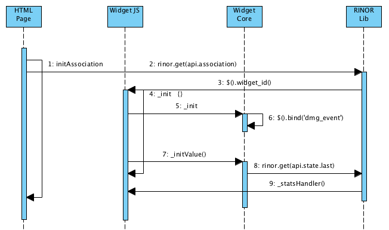
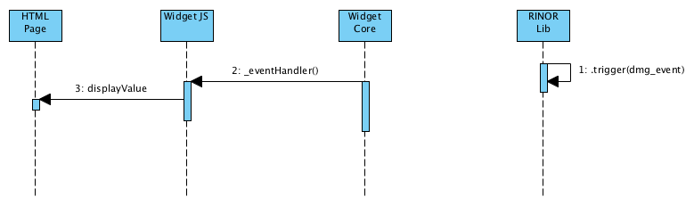

How Widgets are working¶
On Page Load¶
On page load, each widget JS file is loaded.

- Create_widget() is called for each.
- For each widget a jQuery class is created as a subclass of ui.widget_core.
- The widget is registred on a list, sorted by sensor/actuator type.
On Page Ready¶
On page ready each widget/feature association is placed and configured.
- On page ready, the initAssociation is called by the DOM event.
- An AJAX fonction contact the RINOR server and retreive the associations list.
- Each feature is identified and ready to be initialised with the linked widget element.
- The _init fonction of the feature/widget is called.
- ...
- The widget is bind to the event channel to receive all event notifications.
- The widget try to get his last value state.
- The RINOR server is connected to get the value. If the value exist in the database, the value is sent to the widget using the event channel. (Asynchrone)
- When the event is receved. The state handler fonction is called, and display the widget state.
On State Event received¶
- When a state event is receved (via RINOR). The state handler fonction is called on each widget.
- If the feature matches the event identifier, the state handler process the data.
- The new state is displayed.
On Command sent¶

- A widget action is detected (click).
- The widget prepare the command value to be send.
- The command is send (AJAX) to the RINOR server, and the widget place himself in a waiting state.
- If the command is received and ack by the plugin...
- The widget leave the waiting state.
- When the confirmation state event changed is receved (via RINOR). The state handler fonction is called on the widget.
- If the feature matches the event identifier, the state handler process the data.
- The new state is displayed.